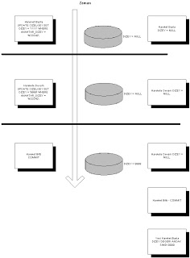

Oracle ve İşlem İdaresi
Veri tabanlarını kullanırken anlamamız gereken çok önemli bir kavram işlem (transaction) kavramıdır. Veri tabanı nedzinde işlemler, zamana bağlı olarak gelişirler, ve bu konuda işlemler, veri tabanına direk bağlı olan programların veriyi 'hangi zamanda, nasıl' göreceğini kontrol ederler. Yani, dış dünyadan veri tabanının içine bakmamız bir işlem çerçevesinde gerçekleşir.
Üstteki resim ile işlemlerin nasıl kullanıldığını görüyoruz. Benzetme ile anlatmak gerekirse, bir işleme başlamak şuna benzer: Mesela veri tabanı bir apartman dairesi olsun, o zaman işleme başlamak, kişinin (kullanıcı) evin bütün odalarına (veriye) bakıp, akılda tutup, sonra bir odaya girmesidir. Bu odaya girince, kişi aklında olan bilgileri işleyip hakkında kararlar verebilir, vs. O sırada, öteki odalarda ve de evin içinde yapılan kalıcı değişiklikleri göremez.
İşlem bitimi, Oracle COMMIT kelimesi ile olur, ve benzetmemizdeki kişinin odanın dışına çıkıp yaptığı değişiklikleri evin içine kalıcı olarak koymasına ya da, dısarıda yapılmış olanları görmesi demektir. Buna işlemlerin kendilerini birbirlerinden 'izole' edebilme özelliği denir. Kilit Sistemi ve İşlem Sınırları Ayrıca, işlemlerin veri izolesi için kullanılmasına ek olarak, Oracle kilit sisteminin de işlem kavramında direk bağlandığını göreceksiniz.
Yani, SELECT * FROM CIZELGE1 WHERE DIZEY1 = '111' FOR UPDATE; komutu sonucunda, DIZEY1 değeri 111 olan veri satırı (row) kitlenecektir. Bu satır, aynı bağlantı üzerinde COMMIT komutu verilene kadar kitli kalacaktır. Aynı işlem sırasında kitli satıra erişmek isteyen öteki kullanıcılar, eğer yukarıdaki komutun AYNISINI işletirlerse, beklemede kalacaklardır. Beklemeden geri dönmek istiyorlar ise, FOR UPDATE kelimesinden sonra NOWAIT (hiç bekleme) kelimesini eklemeleri gerekir. İslem Ne Zaman Başlar? Bir işlem, zaten bir işlem içinde bulunmuyorsanız, herhangi bir SQL komutuna kullandığınızda otomatik olarak başlayacaktır. Yani BEGIN TRANSACTION (işleme başla) gibi bir komuta gerek yoktur. Bir önceki işlemi COMMIT ile bitirdiyseniz, aynı bağlantı üzerindeki ilk SQL komutu otomatik olarak sonraki işlemi başlatır.

Yukarı